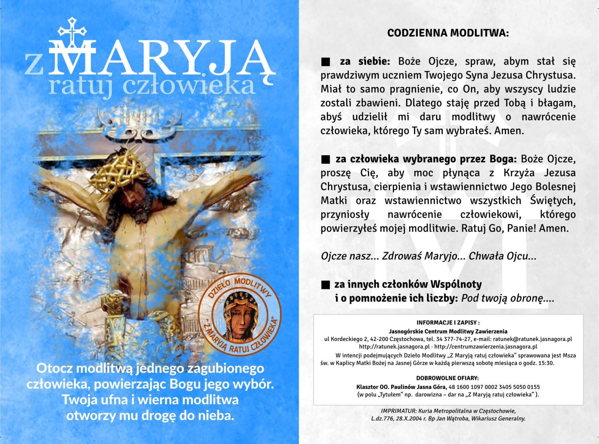

Dzieło modlitwy „Z Maryją ratuj człowieka” (19:20)
CODZIENNA MODLITWA CZŁONKÓW DZIEŁA
ZA SIEBIE:
Boże Ojcze, spraw, abym stał się prawdziwym uczniem Twojego Syna Jezusa Chrystusa. Miał to samo pragnienie, co On, aby wszyscy ludzie zostali zbawieni. Dlatego staję przed Tobą i błagam, abyś udzielił mi daru modlitwy o nawrócenie człowieka, którego Ty sam wybrałeś. Amen.
ZA CZŁOWIEKA WYBRANEGO PRZEZ BOGA:
Boże Ojcze, proszę Cię, aby moc płynąca z Krzyża Jezusa Chrystusa, cierpienia i wstawiennictwo Jego Bolesnej Matki oraz wstawiennictwo wszystkich świętych, przyniosły nawrócenie człowiekowi, którego powierzyłeś mojej modlitwie. Ratuj go, Panie! Amen.
Modlitwa Pańska - Ojcze nasz
Ojcze nasz, któryś jest w niebie, święć się imię Twoje, przyjdź królestwo Twoje, bądź wola Twoja, jako w niebie tak i na ziemi. Chleba naszego powszedniego daj nam dzisiaj. I odpuść nam nasze winy, jako i my odpuszczamy naszym winowajcom. I nie wódź nas na pokuszenie, ale nas zbaw od złego. Amen.
Zdrowaś Maryjo…
Zdrowaś Maryjo, łaski pełna, Pan z Tobą, błogosławionaś Ty między niewiastami i błogosławiony owoc żywota Twojego Jezus. Święta Maryjo, Matko Boża, módl się za nami grzesznymi teraz i w godzinę śmierci naszej. Amen.
Chwała Ojcu
Chwała Ojcu, i Synowi, i Duchowi Świętemu, jak była na początku, teraz i zawsze i na wieki wieków. Amen.
ZA INNYCH CZŁONKÓW WSPÓLNOTY I O POMNOŻENIE ICH LICZBY:
Pod Twoją obronę uciekamy się, święta Boża Rodzicielko,
naszymi prośbami racz nie gardzić w potrzebach naszych,
ale od wszelakich złych przygód racz nas zawsze wybawiać,
Panno chwalebna i błogosławiona.
O Pani nasza, Orędowniczko nasza, Pośredniczko nasza, Pocieszycielko nasza.
Z Synem swoim nas pojednaj,
Synowi swojemu nas polecaj,
swojemu Synowi nas oddawaj. [2]
Amen.

Bibliografia
- https://www.radiojasnagora.pl/md11-z-maryja-ratuj-czlowieka [dostęp 2026-02-28.]
- https://centrumzawierzenia.jasnagora.pl/dziela/z-maryja-ratuj-czlowieka/modlitwa/ [dostęp 2026-02-28.]
- Droga do nieba. Modlitewnik opracowany przez kapłanów diecezji opolskiej i gliwickiej. Wyd. LX. Opole: Wydawnictwo Św. Krzyża, 1993. ISBN 83-85015-10-0